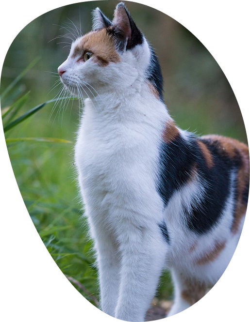

The cat, also referred to as the domestic cat or house cat, is a small domesticated carnivorous mammal. It is the only domesticated species of the family Felidae.
Cats that resemble today’s felids first appeared 5.3 to 3.6 million years ago, and they have continued into present times with remarkably few changes. The original design of fang and claw flexible backbone, muscular strength, and agility allowed felids to survive and adapt to the changes brought by each new era. Adaptations have occurred with changes in prey, but the basic body type has stayed the same.
The earliest known association between cats and humans likely dates to the origins of agriculture in the Middle East, about 15,000–10,000 years ago. A partnership of sorts eventually developed between humans and cats, cats were attracted to the rodents feeding on crops and stored grain. Humans needed their grain protected from rodents, and cats needed a ready food source.
Cats held special status in ancient Egypt, they were cherished pets, seen as divine protectors—in this life and the afterlife—and talismans of good fortune whose bodies may even be inhabited by gods. Cats have also been long associated with sorcery and witchcraft, leading to their frequent mistreatment throughout history. Black cats in particular have been tied to witches.